지적산업기사 (2018-04-28 기출문제)
1과목: 지적측량
1. 평판측량방법에 있어서 도상에 영향을 미치지 아니하는 지상거리의 축척별 허용범위 기준은? (단, M은 축척분모를 말한다.)
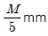
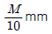
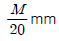
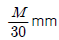
(정답률: 93%)

2. 다음 오차의 종류 중 최소제곱법에 의하여 보정할 수 있는 오차는?
- 착오
- 누적오차
- 부정오차(우연적오차)
- 정오차(계통적오차)
(정답률: 84%)
3. 경위의측량방법과 도선법에 따른 지적도근점의 관측 시 시가지 이겨에서 수평각을 관측 하는 방법으로 옳은 것은?
- 배각법
- 편각법
- 각관측법
- 방위각법
(정답률: 77%)
4. 평판측량방법에 따른 세부측량을 광파조준의를 사용하여 방사법으로 실시할 경우 도상 길이는 최대 얼마 이하로 할 수 있는가?
- 10cm
- 20cm
- 30cm
- 40cm
(정답률: 76%)
5. 지적삼각점의 연직각을 관측치의 최대치와 최소치의 교차가 몇 초 이내 일 때 평균치르 연직각으로 하는가?
- 10초 이내
- 30초 이내
- 50초 이내
- 60초 이내
(정답률: 70%)
6. 지적측량의뢰인과 지적측량수행자가 서로 합의하여 따로 기간을 정하는 경우 측량기간은 전체 기간의 얼마로 하는가?
- 1/2
- 2/3
- 3/4
- 4/5
(정답률: 72%)
7. 90g(그레이드)는 몇 도 (°) 인가?
- 81°
- 91°
- 100°
- 123°
(정답률: 76%)
8. 다음 중 도면에 등록하는 도곽선의 제도방법 기준에 대한 설명으로 옳지 않은 것은?
- 도각선은 0.1mm의 폭으로 제도한다.
- 도곽선의 수치는 2mm의 크기로 제도한다.
- 지적도의 도곽 크기는 가로 30cm, 세로 40cm의 직사각형으로 한다.
- 도곽선의 수치는 도곽선 왼쪽 아랫부분과 오른쪽 윗부분의 종횡선교차점 바깥쪽에 제도한다.
(정답률: 80%)
9. 축척이 1/2400인 지적도면 1매를 축척이 1/1200인 지적도면으로 바꾸었을 때의 도면매수는?
- 2매
- 4매
- 6매
- 8매
(정답률: 85%)
10. 다음은 광파기측량방법에 따른 지적삼각점 관측 기준에 대한 설명이다. ( ) 안에 들어갈 내용으로 옳은 것은?
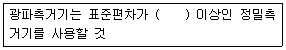
- ±[15mm+5ppm]
- ±[5mm+15ppm]
- ±[5mm+10ppm]
- ±[5mm+5ppm]
(정답률: 79%)
11. 경위의측량방법으로 세부측량을 하는 경우에 측량대상 토지의 경계점 간 실측거리와 경계점의 좌표에 의해 계산한 거리의 교차가 얼마 이내일 때 그 실측거리를 측량원도에 기재 하는가? (단, L은 미터단위로 표시한 실측거리이다.)
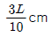
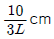
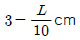
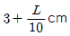
(정답률: 66%)
12. 지적도근점의 각도관측을 방위각법으로 할 때 2등도선의 폐색오차 허용범위는? (단, n은 폐색변을 포함한 변의 수를 말한다.)
- ±1.5√n분 이내
- ±2√n분 이내
- ±2.5√n분 이내
- ±3√n분 이내
(정답률: 81%)
13. R=500m, 중심각(θ)이 60°인 경우 AB의 직선거리는?
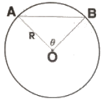
- 400m
- 500m
- 600m
- 1000m
(정답률: 74%)
14. 지적측량에 사용되는 지적기준점 기호 제도방법으로 옳지 않은 것은?
- 2등삼각점 :
- 위성기준점 :
- 4등삼각점 :
- 지적삼각점 :
(정답률: 66%)
15. 지적삼도의 축척이 600분의 1인 지역에서 분할필지의 측정면적이 135.65m2 일 경우 면적의 결정은 얼마로 하여야 하는가?
- 135m2
- 135.6m2
- 135.7m2
- 136m2
(정답률: 76%)
16. 다각망도선법에서 도선이 15개이고 교점이 6개 일 때 필요한 최소 조건식의 수는?
- 7개
- 8개
- 9개
- 10개
(정답률: 81%)
17. 축척 1200분의 1 지역에서 평판을 구심할 경우 제도 허용 오차를 0.3mm 정도로 할때 지상의 구심오차(편심 거리)는 몇 cm 까지 허용할 수 있는가?
- 3cm 이내
- 9cm 이내
- 18cm 이내
- 24cm 이내
(정답률: 49%)
18. 경위의측량방법에 따른 세부측량의 관측방법을 옳지 않은 것은?
- 관측은 교회법에 의한다
- 연직각은 분단위로 독정한다.
- 연직각은 정반으로 1회 관측한다.
- 관측은 20초독 이상의 경위의를 사용한다.
(정답률: 51%)
19. 지적기준점성과의 관리에 관한 내용으로 옳은 것은?
- 지적삼각점성과는 시·도지사가 관리한다.
- 지적삼각점보조점성과는 시·도지사가 관리한다.
- 지적삼각점성과는 국토교통부장관이 관리한다.
- 지적삼각보조점성과는 국토교통부장관이 관리한다.
(정답률: 70%)
20. 두 점 간의 실거리 300m를 도상에 6mm로 표시한 도면의 축척은?
- 1/10000
- 1/20000
- 1/25000
- 1/50000
(정답률: 74%)
2과목: 응용측량
21. GNSS 측량에서 이동국 수신기를 설치하는 순간 그 지점의 보정 데이터를 기지국에 송신하여 상대적인 방법으로 위치를 결정하는 것은?
- Static 방법
- Kinematic 방법
- Pseudo-Kinematic 방법
- Real Time Kinematic 방법
(정답률: 65%)
22. 항공사진을 판독할 때 사면의 경사는 실제보다 어떻게 보이는가?
- 사면의 경사는 방향이 반대로 나타난다.
- 실제보다 경사가 완만하게 보인다.
- 실제보다 경사가 급하게 보인다.
- 실제와 차이가 없다.
(정답률: 67%)
23. 경사거리가 130m인 터널에서 수평각을 관측할 때 시준방향에서 직각으로 5mm의 시준 오차가 발생하였다면 수평각 오차는?
- 5′′
- 8′′
- 10′′
- 20′′
(정답률: 57%)
24. 축척 1:25000 지형도에서 간곡선의 간격은?
- 1.25m
- 2.5m
- 5m
- 10m
(정답률: 69%)
25. 단곡선의 설치에 사용되는 명칭의 표시로 옳지 않은 것은?
- E.C, - 곡선시점
- C.L, - 곡선장
- I - 교각
- T.L. 접선장
(정답률: 78%)
26. 사진의 크긱가 23cmx23cm, 초점거리 153mm, 촬영고도 750m, 사진주점기선장 10cm인 2장의 인접사진에서 관측한 굴뚝의 시차차가 7.5mm 일 때 지상에서의 실제 높이는?
- 45.24m
- 56.25m
- 62.72m
- 85.36m
(정답률: 54%)
27. 상향경사 4%, 하향경사 4%인 종단곡선 길이(l)가 50m인 종단곡선에서 끝단의 종거(y)는? (단, 종거
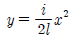
)- 0.5m
- 1m
- 1.5m
- 2m
(정답률: 38%)
28. 그림과 같은 지형표시법을 무엇이라고 하는가?
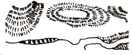
- 영선법
- 음영법
- 채색법
- 등고선법
(정답률: 80%)
29. 한 개의 깊은 수직터널에서 터널 내외를 연결하는 연결측량방법으로서 가장 적당한 것은?
- 트래버스 측량방법
- 트랜싯과 추선에 의한 방법
- 삼각측량 방법
- 측위 망원경에 의한 방법
(정답률: 79%)
30. 지형측량에서 기설 삼각점만으로 세부측량을 실시하기에 부족할 경우 새로운 기준점을 추가적으로 설치하는 점은?
- 경사변환점
- 방향변환점
- 도근점
- 이기점
(정답률: 74%)
31. GNSS 측량에서 제어부문의 주요 임무로 틀린 것은?
- 위성시각의 동기화
- 위성으로의 자료전송
- 위성의 궤도 모니터링
- 신호정보를 이용한 위치결정 및 시각비교
(정답률: 49%)
32. 표고가 0m인 해변에서 눈높이 1.45m인 사람이 볼 수 있는 수평선까지의 거리는? (단, 지구반지름 R = 6370km, 굴절계수 k = 0.14)
- 4713.91m
- 4634.68m
- 4298.02m
- 4127.47m
(정답률: 39%)
33. 수준측량의 왕복거리 2km에 대하여 허용오차가 ±3mm라면 왕복거리 4km에 대한 허용 오차는?
- ±4.24mm
- ±6.00mm
- ±6.93mm
- ±9.00mm
(정답률: 59%)
34. 지구 곡률에 의한 오차인 구차에 대한 설명으로 옳은 것은?
- 구차는 거리제곱에 반비례한다.
- 구차는 곡률반지름의 제곱에 비례한다.
- 구차는 곡률반지름에 비례한다.
- 구차는 거리제곱에 비례한다.
(정답률: 47%)
35. 노선측량에서 일반국도를 개설하려고 한다. 측량의 순서로 옳은 것은?
- 계획조사측량 → 노선선정 → 실시설계측량 → 세부측량 → 용지측량
- 노선선정 → 계획조사측량 → 실시설계측량 → 세부측량 → 용지측량
- 노선선정 → 계획조사측량 → 세부측량 → 실시설계측량 → 용지측량
- 계획조사측량 → 노선선정 → 세부측량 → 실시설계측량 → 용지측량
(정답률: 61%)
36. 단곡선 측량에서 교각이 50°, 반지름이 250m인 경우에 외할(E)은?
- 10.12m
- 15.84m
- 20.84m
- 25.84m
(정답률: 41%)
37. 항공사진에서 나타나는 지상 기복물의 왜곡(歪曲)현상에 대한 설명으로 옳지 않은 것은?
- 기복물의 왜곡 정도는 사진 중심으로부터의 거리에 비례한다.
- 왜곡 정도를 통해 기복물의 높이를 구할 수 있다.
- 기복물의 왜곡은 촬영고도가 높을수록 커진다
- 기복물의 왜곡은 사진 중심에서 방사방향으로 일어난다.
(정답률: 42%)
38. GNSS 측량에 의한 위치결정 시 최소 4대 이상의 위성에서 동시 관측해야 하는 이유로 옳은 것은?
- 궤도오차를 소거한 3차원 위치를 구하기 위하여
- 다중경로오차를 소거한 3차원 위치를 구하기 위하여
- 시계오차를 소거한 3차원 위치를 구하기 위하여
- 전리층오차를 소거한 3차원 위치를 구하기 위하여
(정답률: 49%)
39. 다음 중 지성선에 속하지 않는 것은?
- 능선
- 계곡선
- 경사변환선
- 지질변환선
(정답률: 72%)
40. 사진측량에서의 사진 판독 순서로 옳은 것은?
- 촬영계획 및 촬영 → 판독기준 작성 → 판독 → 현지조사 → 정리
- 촬영계획 및 촬영 → 판독기준 작성 → 현지조사 → 정리 → 판독
- 판독기준 작성 → 촬영계획 및 촬영 → 판독 → 정리 → 현지조사
- 판독기준 작성 → 촬영계획 및 촬영 → 현지조사 → 판독 → 정리
(정답률: 45%)
3과목: 토지정보체계론
41. 한국토지정보체계(KLIS)에서 지적정보관리시스템의 기능에 해당하지 않는 것은?
- 측량결과파일(*.dat)의 생성 기능
- 소유권연혁에 대한 오기정정 기능
- 개인별 토지소유 현황을 조회하는 기능
- 토지이동에 따른 변동내역을 조회하는 기능
(정답률: 51%)
42. 벡터파일 포맷 중 DXF파일에 대한 설명으로 옳지 않은 것은?
- 아스키 문서 파일로서 “.dxf”를 확장자로 가진다.
- 자료의 관리나 사용, 변경이 쉽고 변환 효율이 뛰어나다.
- 일반적인 텍스트 편집기를 통해서도 내용을 읽고 쉽게 편집할 수 있다.
- 행 단위로 데이터 필드가 이루어져 읽기 어렵고 용량도 작아지는 장점도 있다.
(정답률: 61%)
43. 지적도를 수치화하기 위한 작성과정으로 옳은 것은?
- 작업계획 수립 → 벡터라이징 → 좌표독취(스캐닝) → 정위치 편집 → 도면작성
- 작업계획 수립 → 좌표독취(스캐닝) → 벡터라이징 → 정위치 편집 → 도면작성
- 작업계획 수립 → 벡터라이징 → 정위치 편집 → 좌표독취(스캐닝) → 도면작성
- 작업계획 수립 → 좌표독취(스캐닝) → 정위치 편집 → 벡터라이징 → 도면작성
(정답률: 65%)
44. 다음 중 지리정보시스템의 자료 구축 시 발생하는 오차가 아닌 것은?
- 자료처리 시 발생하는 오차
- 디지타이징 시 발생하는 오차
- 좌표투영을 위한 스케일 오차
- 절대위치 자료생성 시 지적측량기준점의 오차
(정답률: 39%)
45. 격자구조를 벡터구조로 변환할 때 격자영상에 생긴 잡음(noise)을 제거하고 외곽선을 연속적으로 이어주는 영상처리 과정을 무엇이라고 하는가?
- Noising
- Filtering
- Thinning
- Conversioning
(정답률: 80%)
46. 다음 중 CNS(Car Navigation System)에서 이용하고 있는 대표적인 지적정보는?
- 지번정보
- 면적정보
- 지목정보
- 토지소유자정보
(정답률: 78%)
47. 토지정보체계의 구축에 있어 벡터 자료(vector data)를 취득하기 위한 장비로 옳은 것은?
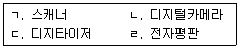
- ㄱ, ㄴ
- ㄱ, ㄹ
- ㄴ. ㄷ
- ㄷ, ㄹ
(정답률: 73%)
48. 래스터 데이터에 해당하지 않는 것은?
- 이미지 데이터
- 위성영상 데이터
- 위치좌표 데이터
- 항공사진 데이터
(정답률: 67%)
49. 조직 안에서 다수의 사용자들이 의사결정 지원을 위해 공동으로 사용할 수 있도록 통합 저장되어 있는 자료의 집합을 의미하는 것은?
- 데이터 마이닝
- 데이터 모델링
- 데이터 웨어하우스
- 데이터 데이터베이스
(정답률: 70%)
50. 다음 중 실세계에서 기호화된 지형지물의 지도를 이루는 기본적인 지형요소로 공간객체의 단위인 것은?
- Feature
- MDB
- Pointer
- Coverage
(정답률: 62%)
51. 경계점좌표등록부 시행지역의 지적도면을 전산화하는 방법으로 가장 적합한 것은?
- 스캐닝 방식
- 좌표입력 방식
- 항공측량 방식
- 디지타이징 방식
(정답률: 60%)
52. 다음 중 사진을 구성하는 요소로 영상에서 눈에 보이는 가장 작은 비분할 2차원적 요소는?
- 노드(node)
- 픽셀(pixel)
- 그리드(grid)l
- 폴리곤(polygon)
(정답률: 79%)
53. 데이터베이스관리시스템이 파일시스템에 비하여 갖는 단점은?
- 자료의 중복성을 피할 수 없다.
- 자료의 일관성이 확보되지 않는다.
- 일반적으로 시스템 도입비용이 비싸다.
- 사용자별 자료접근에 대한 권한 부여를 할 수 없다.
(정답률: 78%)
54. 지적전산자료를 이용 또는 활용하고자 하는 자는 누구에게 신청서를 제출하여 심사를 신청하여야 하는가?
- 국무총리
- 시·도지사
- 서울특별시장
- 관계 중앙행정기관의 장
(정답률: 49%)
55. 국가나 지방자치단체가 지적전산자료를 이용 또는 활용하는 경우의 사용료는?
- 면제한다.
- 현금으로 한다.
- 수입인지로 한다.
- 수입증지로 한다.
(정답률: 80%)
56. 위성영상의 기준점 자료를 이용하여 상소를 재배열하는 보간법이 아닌 것은?
- Bicubic 보간법
- Shape weighted 보간법
- Nearest neighbor 보간법
- Inverse distance weighting 보간법
(정답률: 47%)
57. 토지 및 임야 대장에 등록하는 각 필지를 식별하기 위한 토지의 고유번호는 총 몇 자리로 구성하는가?
- 10자리
- 15자리
- 19자리
- 21자리
(정답률: 85%)
58. 다음 중 토지정보시스템(LIS)과 가장 관련이 깊은 것은?
- 법지적
- 세지적
- 소유지적
- 다목적지적
(정답률: 79%)
59. 지번주소체계와 도로명주소체계에 대한 설명으로 가장 거리가 먼 것은?
- 지번주소는 토지중심으로 구성된다.
- 도로명주소는 주소(건물번호)를 표시하는 것을 주목적으로 한다.
- 대부분 OECD 국가들이 지번주소체계를 채택하고 있다.
- 지번주소는 토지표시와 주소를 함께 사용함으로써 재산권 보호가 용이하다.
(정답률: 72%)
60. 위상구조에 사용되는 것이 아닌 것은?
- 노드
- 링크
- 체인
- 밴드
(정답률: 67%)
4과목: 지적학
61. 다음 중 1필지에 대한 설명으로 옳지 않은 것은?
- 법률적 토지 단위
- 토지의 등록 단위
- 인위적인 토지 단위
- 지형학적 토지 단위
(정답률: 71%)
62. 토지 표시 사항 중 물권객체를 구분하여 표상(表象) 할 수 있는 역할을 하는 것은?
- 경계
- 지목
- 지번
- 소유자
(정답률: 50%)
63. 다음 중 지적이론의 발생설로 가장 지배적인 것으로 아래의 기록들이 근거가 되는 학설은?
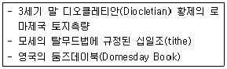
- 과세설
- 지배설
- 치수설
- 통치설
(정답률: 79%)
64. 임야조사사업 당시 토지의 사정기관은?
- 면장
- 도지사
- 임야조사위원회
- 임시토지조사국장
(정답률: 52%)
65. 경계의 특징에 대한 설명으로 옳지 않은 것은?
- 필지 사이에는 1개의 경계가 존재한다.
- 경계는 크기가 없는 기하학적인 의미를 갖는다.
- 경계는 경계점 사이를 직선으로 연결한 것이다.
- 경계는 면적을 갖고 있으므로 분할이 가능하다.
(정답률: 68%)
66. 지적공부정리를 위한 토지이동의 신청을 하는 경우 지적측량을 요하지 않는 토지이동은?
- 분할
- 합병
- 등록전환
- 축척변경
(정답률: 80%)
67. 지적소관청에서 지적공부 등본을 발급하는 것과 관계있는 지적의 기본이념은?
- 지적공개주의
- 지적국정주의
- 지적신청주의
- 지적형식주의
(정답률: 59%)
68. 우리나라 지적제도의 원칙과 가장 관계가 없는 것은?
- 공시의 원칙
- 인적 편성주의
- 실질적 심사주의
- 적극적 등록주의
(정답률: 74%)
69. 지번의 부여 단위에 따른 분류 중 해당 지번설정지역의 면적이 비교적 넓고 지적도의 매수가 많을 때 흔히 채택하는 방법은?
- 기우단위법
- 단지단위법
- 도엽단위법
- 지역단위법
(정답률: 63%)
70. 토지조사사업 당시의 지목 중 비과세지에 해당하지 않는 것은?
- 구거
- 도로
- 제방
- 지소
(정답률: 64%)
71. 토지를 지적공부에 등록하여 외부에서 인식할 수 있도록 하는 제도의 이론적 근거는?
- 공개제도
- 공시제도
- 공증제도
- 증명제도
(정답률: 70%)
72. 집 울타리 안에 꽃동산이 있을 때 지목으로 옳은 것은?
- 대
- 공원
- 임야
- 유원지
(정답률: 78%)
73. 근대적 세지적의 완성과 소유권제도의 확립을 위한 지적제도 성립의 전환점으로 평가되는 역사적인 사건은?
- 솔리만 1세의 오스만제국 토지법 시행
- 윌리암 1세의 영국 둠스데이 측량 시행
- 나폴레옹 1세의 프랑스 토지관리법 시행
- 디오클레시안 황제ㅐ의 로마제국 토지 측량
(정답률: 80%)
74. 아래에서 설명하는 토렌스시스템의 기본이론은?
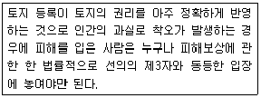
- 공개이론
- 거울이론
- 보험이론
- 커튼이론
(정답률: 76%)
75. 지적공부에 등록하는 면적에 이동이 있을 때 지적공부의 등록 결정권자는?
- 도지사
- 지적소관청
- 토지소유자
- 한국국토정보공사
(정답률: 79%)
76. 다목적지적의 3대 구성요소가 아닌 것은?
- 기본도
- 경계표지
- 지적중첩도
- 측지기준망
(정답률: 72%)
77. 다음 중 일반적으로 지번을 부여하는 방법이 아닌 것은?
- 기번식
- 문장식
- 분수식
- 자유부번식
(정답률: 67%)
78. 다음 중 토지조사사업에서 소유권 조사와 관계되는 사항에 해당하지 않는 것은?
- 준비 조사
- 분쟁지 조사
- 이동지 조사
- 일필지 조사
(정답률: 42%)
79. 토지조사사업 당시 확정된 소유자가 다른 토지 간 사정된 경계선의 명칭으로 옳은 것은?
- 강계선
- 지역선
- 지계선
- 구역선
(정답률: 80%)
80. 지적제도의 기능 및 역할로 옳지 않은 것은?
- 토지거래의 기준
- 토지등기의 기초
- 토지소유제한의 기준
- 토지에 대한 과세의 기준
(정답률: 57%)
5과목: 지적관계
81. 사업시행자가 토지이동에 관하여 대위신청을 할 수 있는 토지의 지목이 아닌 것은?
- 유지, 제방
- 과수원, 유원지
- 철도용지, 하천
- 수도용지, 학교용지
(정답률: 58%)
82. 다음 축척변경에 대한 설명 중 옳지 않은 것은?
- 지적도에서 임야도로 변경하여 등록하는 것이다.
- 지적도에 등록된 경계점의 정밀도를 높이기 위한 것을 말한다.
- 지적도의 작은 축척을 큰 축척으로 변경하여 등록하는 것을 말한다.
- 하나의 지번부여지역에 서로 다른 축척의 지적도가 있는 경우 축척변경 할 수 있다.
(정답률: 64%)
83. 지적재조사에 관한 특별법령상 조정금을 받을권리나 징수할 권리를 몇 년간 행사하지 아니하면 시효의 완성으로 소멸하는가?
- 1년
- 2년
- 3년
- 5년
(정답률: 40%)
84. 지적서고의 설치기준 등에 관한 아래 내용 중 ㉠과 ㉡에 들어갈 수치로 모두 옳은 것은?
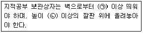
- ㉠: 10cm, ㉡: 10cm
- ㉠: 10cm, ㉡: 15cm
- ㉠: 15cm, ㉡: 10cm
- ㉠: 15cm, ㉡: 15cm
(정답률: 63%)
85. 지적공부의 등록을 말소시켜야 하는 경우는?
- 대규모 화재로 건물이 전소한 경우
- 토지에 형질변경의 사유가 생길 경우
- 홍수로 인하여 하천이 범람하여 토지가 매몰된 경우
- 토지가 지형의 변화 등으로 바다로 된 경우로서 원상회복이 불가능한 경우
(정답률: 78%)
86. 지적측량 시행규칙상 면적측정의 대상으로 옳지 않은 것은?
- 신규등록
- 등록전환
- 토지분할
- 토지합병
(정답률: 74%)
87. 토지의 분할을 신청할 수 있는 경우에 대한 설명으로 옳지 않은 것은?
- 토지의 소유자가 변경된 경우
- 토지소유자가 매매를 위하여 필요로 하는 경우
- 토지이용상 불합리한 지상 경계를 시정하기 위한 경우
- 1필지의 일부가 형질변경 등으로 용도가 변경된 경우
(정답률: 45%)
88. 지적업무처리규정상 지적측량성과의 검사항목 중 기초측량과 세부측량에서 공통으로 검사하는 항목은?
- 계산의 정확여부
- 기지점사용의 적정여부
- 기지점과 지상경계와의 부합여부
- 지적기준점설치망 구성의 적정여부
(정답률: 43%)
89. 지적업무처리규정에서 사용하는 용어의 뜻이 옳지 않은 것은?
- “지적측량파일” 이란 측량현형파일 및 측량성과파일을 말한다.
- “측량준비파일” 이란 부동산종합공부시스템에서 지적측량 업무를 수행하기 위하여 도민 및 대장속성 정보를 추출한 파일을 말한다.
- “측량현형파일” 이란 전자평판측량 및 위성측량방법으로 관측한 데이터 및 지적측량에 필요한 각종 정보가 들어있는 파일을 말한다.
- “측량성과파일” 이란 전자평판측량 및 위성측량방법으로 관측 후 지적측량정보를 처리할 수 있는 시스템에 따라 작성된 측량결과도파일과 토지이동정리를 위한 지번, 지못 및 경계점의 좌표가 포함된 파일을 말한다.
(정답률: 47%)
90. 공간정보의 구축 및 관리 등에 관한 법률상 “지번을 부여하는 단위지역으로서 동·리 또는 이에 준하는 지역”을 말하는 용어는?
- 지목
- 필지
- 지번지역
- 지번부여지역
(정답률: 74%)
91. 지목의 구분 중 '답'에 대한 설명으로 옳은 것은?
- 물을 상시적으로 이요하지 않고 곡물 등의 식물을 주로 재배하는 토지
- 물이 고이거나 상시적으로 물을 저장하고 있는 댐·저수지 등의 토지
- 물을 상시적으로 직접 이용하여 벼·연(蓮)·미나리·왕골 등의 식물을 주로 재배하는 토지
- 용수(用水) 또는 배수(俳水)를 위하여 일정한 형태를 갖춘 인공적인 수로·둑 및 그 부속시설물의 부지와 자연의 유수(流水)가 있거나 있을 것으로 예상되는 소규모 수로부지
(정답률: 70%)
92. 지적측량 시행규칙상 지적도근점의 관측 및 계산의 기준으로 옳지 않은 것은?
- 관측은 20초독 이상의 경위의를 사용할 것
- 배각법으로 관측 시 측정 횟수는 3회로 할 것
- 수평각의 관측은 배각법과 방위각법을 혼용할 것
- 점간거리를 측정하는 경우에는 2회 측정하여 그 측정치의 교차가 평균치의 3천분의 1이하일 때에는 그 평균치를 점간거리로 할 것
(정답률: 44%)
93. 지적업무처리규정상 평판측량방법으로 세부측량을 하는 때에 작성하여야 할 측량기하적으로 옳지 않은 것은?
- 측정점의 방향선 길이는 측정점을중심으로 약 1cm로 표시한다.
- 평판점 옆에 평판이동순서에 따라 점1, 점2----으로 표시한다.
- 측량자는 평판점을 직경 1.5mm 이상 3mm이하의 검은색 원으로 표시한다.
- 측량자는 평판점의 결정 및 방위표정에 사용한 기지점을 직경 1mm와 2mm의 2중원으로 표시한다.
(정답률: 51%)
94. 지적재조사에 관한 특별법령상 사업지구의 경미한 변경에 해당하지 않는 사항은?
- 사업지구 명칭의 변경
- 면적의 100분의 20 이내의 증감
- 필지의 100분의 30 이내의 증감
- 1년 이내의 범위에서의 지적재조사사업기간의 조정
(정답률: 61%)
95. 주된 용도의 토지에 편입하여 1필지로 할 수 있는 경우는?
- 종된 용도의 토지의 지목(地目)이 “대”(垈)인 경우
- 종된 용도의 토지 면적이 330m2를 초과하는 경우
- 주된 용도의 토지의 편의를 위하여 설치된 구거 등의 부지인 경우
- 종된 용도의 토지 면적이 주된 용지의 토지 면적의 10퍼센트를 초과하는 경우
(정답률: 68%)
96. 지적전산자료를 이용·활용하고자 하는 자의 심사신청을 받은 관계 중앙행정기관의 장이 심사하여야 할 사항에 해당하지 않는 것은?
- 신청 내용의 공익성
- 신청 내용의 비용성
- 신청 내용의 적합성
- 신청 내용의 타당성
(정답률: 75%)
97. 다음 중 지적공부의 복구에 관한 관계 자료로 옳지 않은 것은?
- 매매계약서
- 측량 결과도
- 지적공부의 등본
- 토지이동정리 결의서
(정답률: 66%)
98. 공간정보의 구축 및 관리 등에 관한 법률에서 규정하는 내용이 아닌 것은?
- 부동산등기에 관한 사항
- 지적공부의 작성 및 관리에 관한 사항
- 부동산종합공부의 작성 및 관리에 관한 사항
- 측량 및 수로조사의 기준 및 절차에 관한 사항
(정답률: 46%)
99. 축척변경위원회의 심의·의결사항에 해당하지 않는 것은?
- 측량성과 검사에 관한 사항
- 청산금의 이의신청에 관한 사항
- 축척변경 시행계획에 관한 사항
- 지번별 제곱미터당 금액의 결정과 청산금의 산정에 관한 사항
(정답률: 54%)
100. 다음 중 토지의 합병 신청을 할 수 있는 것은?
- 소유자의 주소가 서로 다른 경우
- 지적도의 축척이 서로 다른 경우
- 소유자별 공유지분이 서로 다른 경우
- 「주택법」에 따른 공동주택의 부지로서 합병하여야 할 토지가 있는 경우
(정답률: 79%)